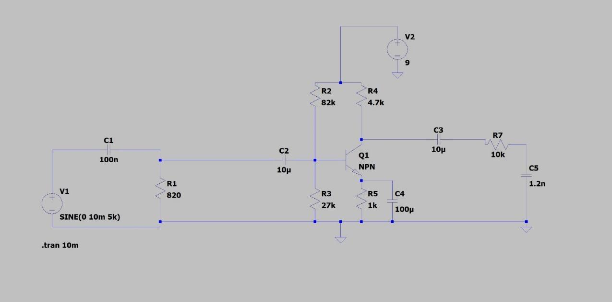
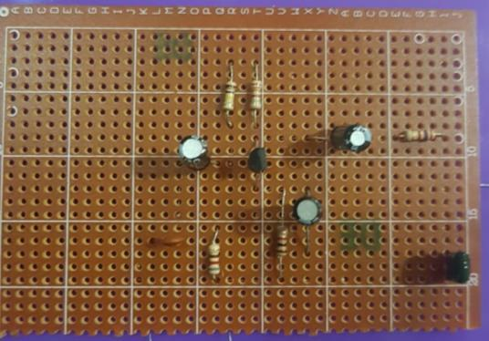
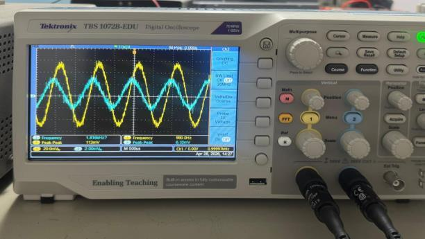
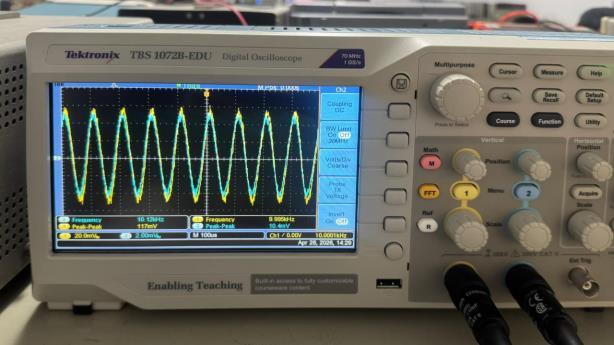
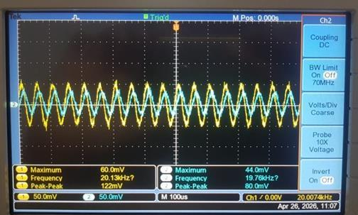
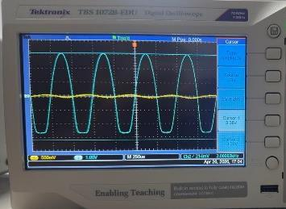

01╱
High-pass filter
The input RC network reduces components below the useful band before amplification.
820 Ω + 100 nF≈1.94 kHz
A three-stage analog conditioner for a basic AM radio audio output: remove low-frequency interference, amplify a weak signal, and roll off high-frequency noise.
high-pass target
assignment target
low-pass target
DC rail
The physical prototype was assembled on dot board. This diagram is a functional signal path, not a wiring schematic.
The input RC network reduces components below the useful band before amplification.
A 2N3904 stage with divider bias raises the filtered signal under a 9 V supply.
A final RC stage reduces high-frequency content at the output.
Original project visuals reproduced from the supplied Group 03 report. The schematic and board image document the reported build.

The report's circuit drawing includes the filter networks, BJT bias divider, coupling capacitors and 9 V rail. Its output resistor is labelled 10 kΩ; the calculation page uses 11 kΩ.

The assembled prototype pictured after soldering in the final report.
An ideal first-order RC model based on selected component values. The gain control is an illustrative parameter, not a transistor simulation.
Calculated curves omit transistor bandwidth, loading, coupling capacitors, clipping and component tolerances. They must not be interpreted as oscilloscope measurements.
Selected original oscilloscope images from the report. Captions identify their report context; the numerical traces are not reanalysed here.




Gain stated for the amplifier stage around 5 kHz.
Gain stated for the assembled multistage circuit.
These values imply 65.4× when directly divided; measurement context needs confirmation.
The report describes attenuation below 2 kHz and above 12 kHz, with useful amplification between them. See the engineering notes for component discrepancies and measurement limitations.